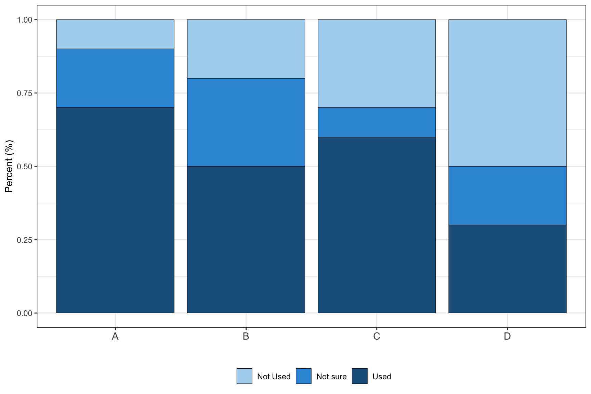
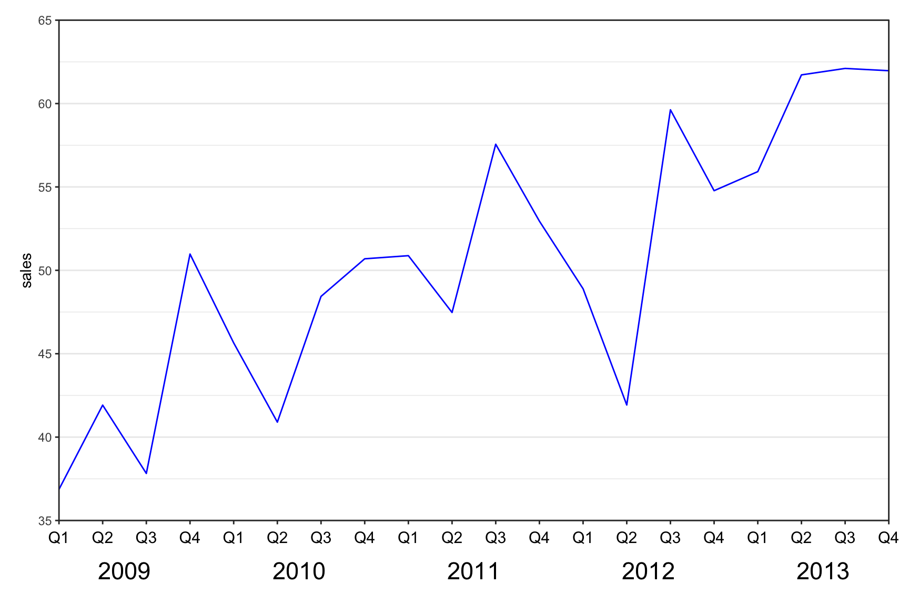
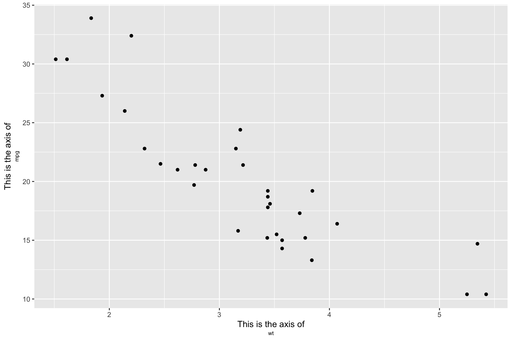
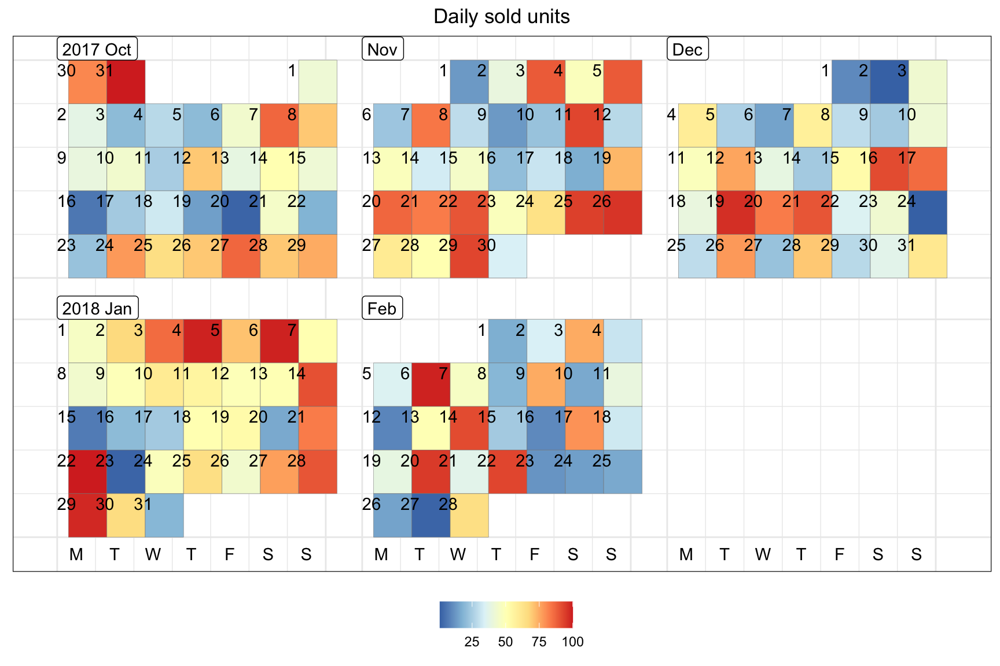
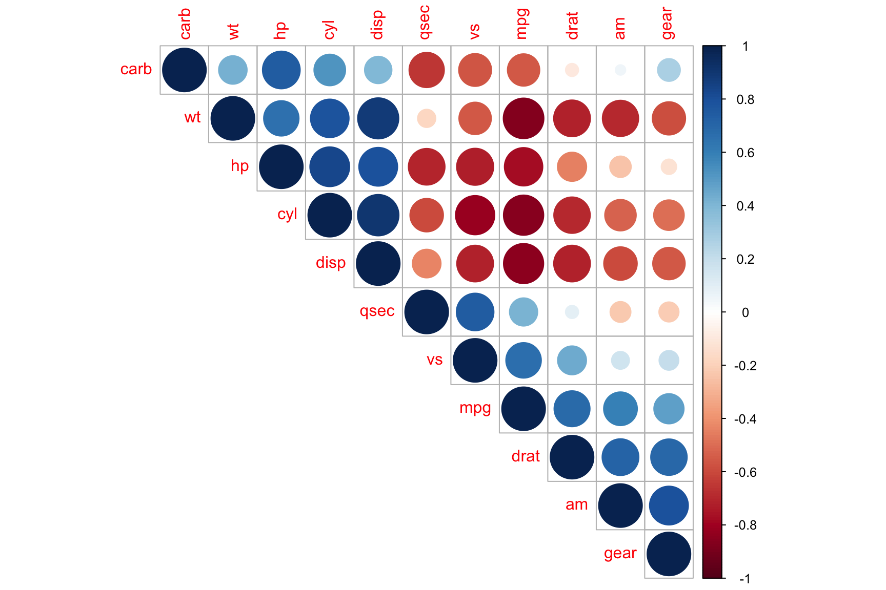
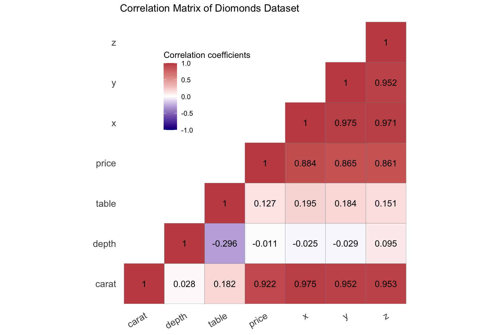
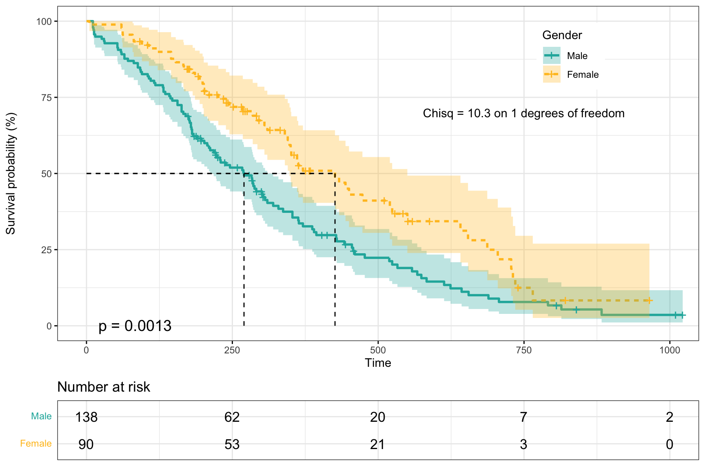
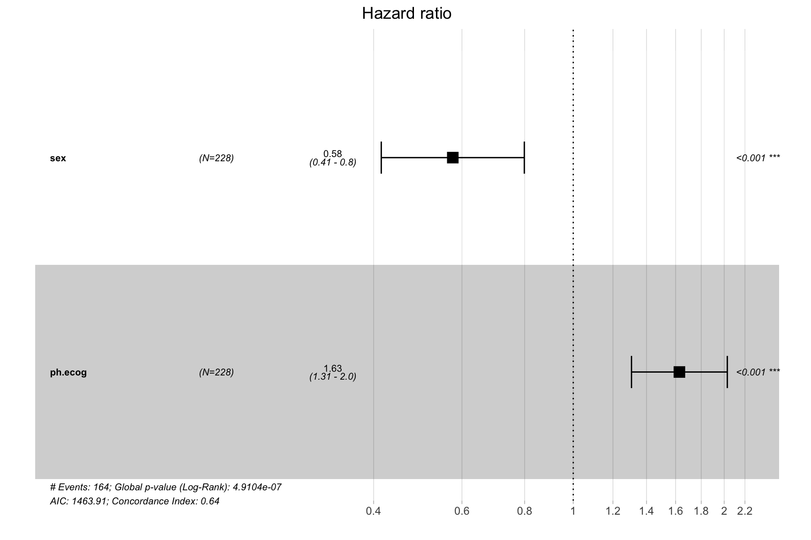
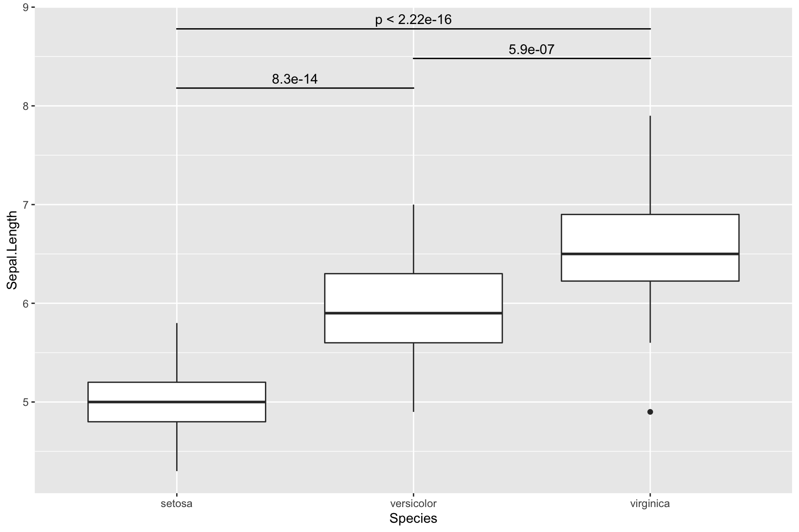
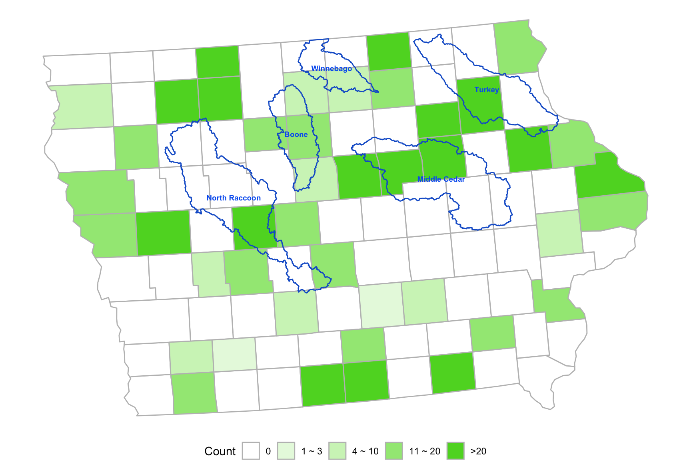

Chapter 2 R plot gallery
Contents
- Multiple 95% Confidence Intervals
- Line Chart
- Boxplot with Regression Result
- Pirate Plot
- Beeswarm Plot
- Bar Plot
- Multi-row x-axis labels
- Calender
- Correlation Plot
- Survival Analysis
- Table Visualization
- Heatmap
- Compare Two Group Means
- Add p-value
- Missing Data in Time Series
- State Map with Fill-in Color
- Animiation Plot
- Dumbbell Chart
- Encircle Points
Multiple 95% Confidence Intervals
set.seed(123)
data.frame(value = rnorm(12, mean = 0, sd = 0.05)) %>%
mutate(lower = value - runif(12, 0, 0.4),
upper = value + runif(12, 0, 0.4),
REG = rep(c("A", "B", "C", "D"), 3),
est = mean(value),
index = rep(1:3, each = 4)) %>%
ggplot(aes(x = lower, xend = upper,
y = index + rep((0:(length(unique(REG))-1))/10, 3),
yend = index + rep((0:(length(unique(REG))-1))/10, 3),
color = REG)) +
geom_segment(lwd = 1, alpha = 0.5) +
scale_color_brewer(palette = "Set1") +
labs(y = "", x = "Reduction Rate") +
scale_y_continuous(breaks = 1:3,
labels = c("method 1", "method 2", "method 3")) +
geom_segment(aes(x = est, xend = est,
y = index - 0.1,
yend = index + (length(unique(REG)))/10)) +
geom_point(aes(x = value,
y = index + rep((0:(length(unique(REG))-1))/10, 3))) +
theme_bw() +
ggtitle("Reduction Rate of Treatment Compared With Placebo") +
theme(plot.title = element_text(hjust = 0.5),
text= element_text(size = 15))
Line Chart
tmp <- data.frame(time = rep(2001:2020, 3),
type = rep(c("Corn", "Soybean", "Rice"), each = 20),
value = c(cumsum(runif(20)),
(1:20)/5 + cumsum(runif(20)),
(1:20)/2 + cumsum(runif(20))))
ggplot(data = tmp, aes(y = value, x = time, group = type, shape = type, linetype = type)) +
geom_point()+
geom_line()+
xlab("Year") + ylab("Price")+
theme_bw() +
labs(group = "type")+
theme(legend.title=element_blank(),legend.position="right") +
geom_vline(aes(xintercept = 2016), color = "red", linetype = "dashed")
Example 2 {-}
dat <- data.frame(year = rep(2001:2021, 4),
profit = rnorm(84, sd = 50) + c((1:21) * 5, (1:21) * 10, (1:21) * 15, (1:21) * 20),
crop = rep(c("corn", "rice", "soybean", "wheat"), each = 21),
impute = sample(c(TRUE, FALSE), size = 84, replace = T, prob = c(0.1, 0.9)))
ggplot(data = dat, aes(y = profit, x = year, group = crop)) +
geom_point(aes(color = interaction(crop, impute, sep = "_"), shape = impute), size = 2.5) +
geom_line(aes(color = crop), size = 1) +
xlab("Year") + ylab("Expected Profit") +
labs(group = "crop") +
theme(axis.text.x = element_text(angle = 45, hjust = 1)) +
theme(legend.title = element_blank(), legend.position = "right") +
scale_shape_discrete(name = "", labels = c("Corn","Rice","Soybean", "Wheat")) +
geom_vline(aes(xintercept = 2016), color = "red", linetype = "dashed") +
geom_hline(aes(yintercept = 0), color = "grey") +
scale_x_continuous(breaks = seq(2000, 2022, 5)) +
scale_y_continuous(breaks = seq(-300, 1000, 200)) +
scale_color_manual(name = "",
values = c("corn_FALSE" = "#E69F00", "corn_TRUE" = "black",
"rice_FALSE" = "#56B4E9", "rice_TRUE" = "black",
"soybean_FALSE" = "#009E73", "soybean_TRUE" = "black",
"wheat_FALSE" = "purple", "wheat_TRUE" = "black",
"corn" = "#E69F00",
"rice" = "#56B4E9",
"soybean" = "#009E73",
"wheat" = "purple"),
labels = c("Corn", "Rice", "Soybean", "Wheat"),
breaks = c("corn_FALSE", "rice_FALSE", "soybean_FALSE", "wheat_FALSE")) +
guides(shape = 'none', # remove the shape legend
color = guide_legend(override.aes = list(
color = c("#E69F00", "#56B4E9", "#009E73", "purple"),
size = 1,
label = c("Corn", "Rice", "Soybean", "Wheat")
))) +
theme_bw()Boxplot with Regression Result
d <- Sleuth3::case1402 %>%
pivot_longer(Forrest:William, names_to = "variety", values_to = "yield")
ggplot(d, aes(x = O3, y = yield, group = O3)) + geom_boxplot() +
geom_point() +
geom_smooth(method = lm, aes(group=1)) +
scale_x_continuous(breaks = c(0, unique(d$O3))) +
ggtitle("Yield vs O3") + xlab("O3") + ylab("") +
theme(axis.text.y=element_blank(),
axis.ticks.y=element_blank())
Pirate Plot
require(yarrr)
yarrr::pirateplot(weight ~ Diet,
data = ChickWeight,
main = "Pirate plot",
inf.method = "ci",
theme = 2, # change theme, from 1 to 4
pal = "decision", # use piratepal(palette = "all") to check available palettes
bar.f.o = 0.2)Beeswarm plot
require(ggbeeswarm)
ggplot(iris, aes(Species, Sepal.Length, colour = Species)) +
geom_violin(width = 0.5) +
geom_beeswarm() +
theme_classic() +
scale_color_brewer(palette = "Set1")
Bar Plot
dat2 <- data.frame(
categ = rep(c("Roads", "Canals", "Early railways", "Railways"), each = 3) %>% forcats::fct_inorder(),
group = rep(c("Maximum", "Mean", "Minimum"), 4),
fill = as.character(c(1,1,1,1,1,1, 2, 1, 3, 1,1,1)),
pattern = c(rep("N", 6), "D", rep("N", 5)),
record = c(NA, 5, NA, 11.5, 3.77, 1.4, 14.3, 6, 2.3, NA, 1.4, NA)
)
dat2 %>% dplyr::filter(is.na(record) == FALSE) %>%
ggplot() +
geom_bar_pattern(aes(x = categ, y = record, fill = fill, group = group, pattern = pattern),
width=0.4, position = position_dodge2(width=0.5, preserve = "single"),
color = "black",
stat = "identity",
pattern_density = 1.0,
pattern_fill = 'grey',
pattern_key_scale_factor = 0.5) +
scale_fill_manual(values = c("#1B4264","#D3CEC7","#5A6065"),
labels = c("Mean", "Maximum", "Minimum")) +
scale_pattern_manual(values = c(D = "stripe", N = "none"), guide = "none") +
guides(fill = guide_legend(override.aes = list(pattern = "none"),
title = NULL)) +
scale_y_continuous(breaks = c(0, 2, 4, 6, 8, 10, 12, 14)) +
labs(x = NULL, y = "Pence") +
theme_bw() +
theme(text = element_text(size = 15), axis.text.y = element_text(angle = 30, hjust = 1)) getrank <- function(data)
{
group <- nrow(data)/4
rankvalue <- NULL
for(i in 1:group)
{
rankvalue <- c(rankvalue, rank(ifelse(data$stat[i*4] %in% c("n_over", "risk"), 1, -1) *
data$value[((i-1)*4+1):(i*4)], ties.method = "min"))
}
data$rank <- as.character(rankvalue)
return(data)
}
data.frame(curve = rep(1:4, each = 4),
design = rep(paste("D", 1:4, sep = ""), 4),
correct = runif(16, max = 100),
OBD = runif(16, max = 100),
noOBD = runif(16, max = 100),
risk = runif(16, max = 100)) %>%
gather(key = "stat", value = "value", -curve, -design) %>%
getrank() %>%
mutate_if(is.numeric, ~round(., 1)) %>%
mutate(ifbest = as.character(rank == "1")) %>%
ggplot(aes(x = curve, y = value, fill = design, pattern = ifbest)) +
geom_bar_pattern(
width=0.75, position = position_dodge2(width=0.7, preserve = "single"),
color = "black",
stat = "identity",
pattern_fill = NA,
pattern_density = 1.0,
pattern_key_scale_factor = 0.5) +
scale_fill_manual(values = c("#EC8F76","#37BAEB", "#A2E265","#E8EC76" ),
labels = c("D1", "D2", "D3", "D4")) +
scale_pattern_manual(values = c("TRUE" = "stripe", "FALSE" = "none"), guide = "none") +
guides(fill = guide_legend(override.aes = list(pattern = "none"),
title = NULL)) +
facet_wrap(~factor(stat, levels = c("OBD", "noOBD", "correct", "risk")),
nrow = 2, scales = "free") +
geom_text(aes(label=value), position=position_dodge(width=0.7), vjust=-0.25, size = 3) +
theme_bw()
conser <- data.frame(type = rep(c("A", "B", "C", "D"), each = 3),
ratio = c(0.1, 0.2, 0.7,
0.2, 0.3, 0.5,
0.3, 0.1, 0.6,
0.5, 0.2, 0.3),
answer = rep(c("a", "b", "c"), 4))
conser %>%
ggplot( aes(x = type, y = ratio, fill = answer)) +
geom_col(color = "black", size = 0.2)+
theme_bw()+
xlab("") +
ylab("Percent (%)") +
theme(legend.title=element_blank(),legend.position="bottom") +
scale_fill_manual(values = c("#AED6F1", "#3498DB","#21618C"), labels = c("Not Used", "Not sure", "Used"))+
scale_x_discrete(labels = function(x) stringr::str_wrap(x, width = 10))+
theme(axis.text.x = element_text(size = 11))
Multi-row x-axis labels
set.seed(1)
df=data.frame(year=rep(2009:2013,each=4),
quarter=rep(c("Q1","Q2","Q3","Q4"),5),
sales=40:59+rnorm(20,sd=5))
ggplot(data = df, aes(x = interaction(year, quarter, lex.order = TRUE),
y = sales, group = 1)) +
geom_line(colour = "blue") +
annotate(geom = "text", x = seq_len(nrow(df)), y = 34, label = df$quarter, size = 4) +
annotate(geom = "text", x = 2.5 + 4 * (0:4), y = 32, label = unique(df$year), size = 6) +
coord_cartesian(ylim = c(35, 65), expand = FALSE, clip = "off") +
theme_bw() +
theme(plot.margin = unit(c(1, 1, 4, 1), "lines"),
axis.title.x = element_blank(),
axis.text.x = element_blank(),
panel.grid.major.x = element_blank(),
panel.grid.minor.x = element_blank())
ggplot(mtcars, aes(wt, mpg)) +
geom_point() +
labs(x = paste0("<span style='font-size: 11pt'>This is the axis of</span><br>
<span style='font-size: 7pt'>wt</span>"),
y = paste0("<span style='font-size: 11pt'>This is the axis of</span><br>
<span style='font-size: 7pt'>mpg</span>")) +
theme(axis.title.x = ggtext::element_markdown(),
axis.title.y = ggtext::element_markdown())
Calendar
require(sugrrants)
require(lubridate)
data.frame(date = lubridate::ymd(strtrim(seq(ISOdate(2017,10,1), ISOdate(2018,2,28), "DSTday"),10)),
# or as.Date("2017-10-1") + 0:150
n = sample(1:100, size = 151, replace = T)) %>%
sugrrants::frame_calendar(x = 1, y = 1, date = date) %>%
ggplot(aes(x = .x, y = .y)) +
ggtitle("Daily sold units") +
theme_bw() +
theme(legend.position = "bottom",
plot.title = element_text(hjust = 0.5)) +
geom_tile(aes(x = .x+(1/13)/2, y = .y+(1/9)/2, fill = n), colour = "grey50") +
scale_fill_distiller(name = "", palette = "RdYlBu") -> p2.sale
sugrrants::prettify(p2.sale, label = c("label", "text", "text2")) # label: month and year; text: weekday at the bottom; text2: day of month
Correlation Plot
require(corrplot)
cor(mtcars) %>%
corrplot::corrplot(., type = "upper", order = "hclust")
Survival Analysis
library(survival)
library(survminer)
surv_model <- survfit(Surv(time, status) ~ sex, data = lung)
p1 <- ggsurvplot(surv_model, data = lung,
conf.int = TRUE, #
pval = TRUE, # p (can customize pval)
fun = "pct", # y
size = 1, #
linetype = "strata", #
palette = c("lightseagreen", "goldenrod1"), #
legend = c(0.8, 0.85), # legend
legend.title = "Gender", # legend
legend.labs = c("Male", "Female"), # legend
risk.table = TRUE, # add risk table
tables.height = 0.2,
tables.theme = theme_cleantable(),
surv.median.line = "hv",
ggtheme = theme_bw())
p1$plot <- p1$plot + annotate("text", x = 750, y = 70, # xy
label = "Chisq = 10.3 on 1 degrees of freedom") #
p1
library(ggsurvfit)
mymodel <- survfit2(Surv(time, status) ~ surg, data = df_colon)
ggsurvfit(mymodel) +
add_confidence_interval() + #
scale_color_manual(values = c('#54738E', '#82AC7C')) + #
scale_fill_manual(values = c('#54738E', '#82AC7C')) + #
add_risktable() + #
theme_minimal() +
theme(legend.position = "bottom")
cox_model <- coxph(Surv(time, status) ~ sex + ph.ecog, data = lung)
ggforest(cox_model)
Table Visualization
require(formattable)
require(DT)
df <-
data.frame(id = 1:10,
name = c("Bob", "Ashley", "James", "David", "Jenny",
"Hans", "Leo", "John", "Emily", "Lee"),
age = c(28, 27, 30, 28, 29, 29, 27, 27, 31, 30),
grade = c("C", "A", "A", "C", "B", "B", "B", "A", "C", "C"),
test1_score = c(8.9, 9.5, 9.6, 8.9, 9.1, 9.3, 9.3, 9.9, 8.5, 8.6),
test2_score = c(9.1, 9.1, 9.2, 9.1, 8.9, 8.5, 9.2, 9.3, 9.1, 8.8),
final_score = c(9, 9.3, 9.4, 9, 9, 8.9, 9.25, 9.6, 8.8, 8.7),
registered = c(TRUE, FALSE, TRUE, FALSE, TRUE, TRUE, TRUE, FALSE, FALSE, FALSE),
stringsAsFactors = FALSE)
formattable(df,
list(age = color_tile("white", "orange"),
grade = formatter("span",
style = x ~ ifelse(x == "A", style(color = "green", font.weight = "bold"), NA) ),
area(col = c(test1_score, test2_score)) ~ normalize_bar("pink", 0.4),
final_score = formatter("span", style = x ~ style(color = ifelse(rank(-x) <= 3, "green", "gray")),
x ~ sprintf("%.2f (rank: %02d)", x, rank(-x))),
registered = formatter("span", style = x ~ style(color = ifelse(x, "green", "red")),
x ~ icontext(ifelse(x, "ok", "remove"), ifelse(x, "Yes","No")))
)
)| id | name | age | grade | test1_score | test2_score | final_score | registered |
|---|---|---|---|---|---|---|---|
| 1 | Bob | 28 | C | 8.9 | 9.1 | 9.00 (rank: 06) | Yes |
| 2 | Ashley | 27 | A | 9.5 | 9.1 | 9.30 (rank: 03) | No |
| 3 | James | 30 | A | 9.6 | 9.2 | 9.40 (rank: 02) | Yes |
| 4 | David | 28 | C | 8.9 | 9.1 | 9.00 (rank: 06) | No |
| 5 | Jenny | 29 | B | 9.1 | 8.9 | 9.00 (rank: 06) | Yes |
| 6 | Hans | 29 | B | 9.3 | 8.5 | 8.90 (rank: 08) | Yes |
| 7 | Leo | 27 | B | 9.3 | 9.2 | 9.25 (rank: 04) | Yes |
| 8 | John | 27 | A | 9.9 | 9.3 | 9.60 (rank: 01) | No |
| 9 | Emily | 31 | C | 8.5 | 9.1 | 8.80 (rank: 09) | No |
| 10 | Lee | 30 | C | 8.6 | 8.8 | 8.70 (rank: 10) | No |
Heatmap
ggplot(airquality, aes(Day, Month, fill = Temp)) +
geom_tile() +
scale_x_continuous(breaks = seq(1:31)) +
theme_bw() +
scale_fill_viridis_c(option = "A") # Example 2
set.seed(1234)
mydata <- matrix(rnorm(5*10), ncol = 10)
colnames(mydata) <- letters[1:10]
heatmap(mydata,
# Colv = NA, # Rowv = NA, # hide the clustering
main = "heatmap", col = cm.colors(256))Compare Two Group Means
require(dabestr)
mydata <- iris[iris$Species %in% c("setosa", "versicolor"), ] %>%
mutate(Class = ifelse(Sepal.Length > 5.5, "Long", "Short"))
mytest <- dabest(mydata, Species, Petal.Width, # Compare Petal.Width for Species
idx = c("setosa", "versicolor"), # setosa is the control group
paired = FALSE)
mymean_diff <- mean_diff(mytest)
plot(mymean_diff, color.column = Class)Add p-value
ggplot(iris, aes(Species, Sepal.Length)) +
geom_boxplot() +
ggsignif::geom_signif(comparisons = list(c(1, 2)), # group 1 vs group 2
y_position = 8,
tip_length = 0) +
ggsignif::geom_signif(comparisons = list(c(1, 3)),
y_position = 8.6,
tip_length = 0) +
ggsignif::geom_signif(comparisons = list(c(2, 3)),
y_position = 8.3,
tip_length = 0)
Missing Data in Time Series
library(imputeTS)
ggplot_na_distribution(tsAirgap) data_imputation <- na_interpolation(tsAirgap, option = "linear")
# linear interpolation; we can also try spline, stine
ggplot_na_imputations(tsAirgap, data_imputation, tsAirgapComplete)State Map with Fill-in Color
- Example 1
library(usmap)
library(sf)
d <- us_map("counties") %>% dplyr::filter(abbr == "IA")
d$county <- substr(d$county, 1, nchar(d$county) - 7) # remove string " county"
d$group <- d$county
d <- d %>% arrange(group)
database <- data.frame(county = d$county %>% unique(),
erosion = rbeta(99, 2, 4) * 14) %>%
mutate(erolv = cut(erosion, breaks = c(0, 0.5, 1, 1.5, 2, 2.5, 3, 3.5, 4, 4.5, 5:13, 100),
labels = c(paste0("C", 1:19))))
# color code
colorvalues <- c("C1" = "#83858c", "C2" = "#6d7985", "C3" = "#62807c", "C4" = "#4b734c",
"C5" = "#4a734c", "C6" = "#667c3e", "C7" = "#748036", "C8" = "#5f7824",
"C9" = "#978e24", "C10"= "#977f17", "C11"= "#90651b", "C12"= "#8a4c1b",
"C13"= "#82341a", "C14"= "#781e1a", "C15"= "#571528", "C16"= "#3a132b",
"C17"= "#2e1739", "C18"= "#1a0b1d", "C19"= "#110a16")
# polygon
USS <- lapply(split(d, d$county), function(x) {
if(length(table(x$piece)) == 1)
{
st_polygon(list(cbind(x$x, x$y)))
}
else
{
st_multipolygon(list(lapply(split(x, x$piece), function(y) cbind(y$x, y$y))))
}
})
tmp <- st_sfc(USS, crs = usmap_crs()@projargs)
tmp <- st_sf(data.frame(database, geometry = tmp))
tmp$centroids <- st_centroid(tmp$geometry)
ggplot() + geom_sf(data = tmp) +
geom_sf(aes(fill = erolv), color = "white", data = tmp) +
geom_sf_text(aes(label = county, geometry = centroids), colour = "black", size = 3.5, data = tmp) +
scale_fill_manual(values = colorvalues,
labels = c("[0, 0.5)", "[0.5, 1)", "[1, 1.5)", "[1.5, 2)", "[2, 2.5)",
"[2.5, 3)", "[3, 3.5)", "[3.5, 4)", "[4, 4.5)", "[4.5, 5)",
"[5, 6)", "[6,7)", "[7, 8)", "[8, 9)", "[9, 10)", "[10, 11)",
"[11, 12)", "[12, 13)", ">= 13")) + # change legend names and colors
ggtitle("Iowa") +
guides(fill = guide_legend(title = NULL)) + # remove legend title
theme_void() + theme(plot.title = element_text(hjust = 0.5))- Example 2
library(usmap)
library(sf)
huc8 <- readRDS("data/huc8.rds")
d <- us_map("counties") %>% dplyr::filter(abbr == "IA")
d$county <- substr(d$county, 1, nchar(d$county) - 7) # remove string " county"
d$group <- d$county
d <- d %>% arrange(group)
set.seed(123)
database <- data.frame(county = d$county %>% unique(),
countyid = 1:99,
num = 0)
for(i in 1:99)
{
database$num[i] <- sample(c(0, round(100 * rbeta(1, 2, 10))), 1)
}
database <- database %>%
mutate(numrange = cut(num, breaks = c(-1, 1, 3, 10, 20, 300),
labels = c(paste0("C", 1:5))))
colorvalues <- c("C1" = "#FFFFFF", "C2" = "#e7f9e0", "C3" = "#d0f3c1",
"C4" = "#a1e784", "C5" = "#5bd629")
# polygon
USS <- lapply(split(d, d$county), function(x) {
if(length(table(x$piece)) == 1)
{
st_polygon(list(cbind(x$x, x$y)))
}
else
{
st_multipolygon(list(lapply(split(x, x$piece), function(y) cbind(y$x, y$y))))
}
})
tmp <- st_sfc(USS, crs = usmap_crs()@projargs)
tmp <- st_sf(data.frame(database, geometry = tmp))
tmp$centroids <- st_centroid(tmp$geometry)
huc8$centroids <- st_centroid(huc8$geometry)
ggplot() + geom_sf(data = tmp, aes(fill = numrange), color = "grey") +
geom_sf(data = huc8, color = "#1660CF", fill = "#FFFFFF00") +
geom_sf_text(aes(label = SUBBASIN, geometry = centroids), colour = "#0563F0",
size = 2.5, data = huc8, fontface = "bold") +
scale_fill_manual(values = colorvalues,
labels = c("0", "1 ~ 3", "4 ~ 10", "11 ~ 20", ">20")) +
guides(fill = guide_legend(title = "Count")) +
theme_void() +
theme(plot.title = element_text(hjust = 0.5), legend.position="bottom")
- Example 3
library(usmap)
library(sf)
library(survey)
data(api)
d <- us_map("counties") %>% dplyr::filter(abbr == "CA")
d$county <- substr(d$county, 1, nchar(d$county) - 7)
d$group <- d$county
# combine some counties together
d$group[d$county %in% c("Del Norte", "Trinity")] <- "Humboldt"
d$group[d$county %in% c("Siskiyou", "Modoc", "Lassen")] <- "Shasta"
d$group[d$county %in% c("Lake")] <- "Mendocino"
d$group[d$county %in% c("Tehama", "Glenn", "Colusa", "Yuba", "Sierra", "Plumas")] <- "Butte"
d$group[d$county %in% c("Sutter", "Nevada")] <- "Placer"
d$group[d$county %in% c("Napa")] <- "Yolo"
d$group[d$county %in% c("Amador")] <- "Sacramento"
d$group[d$county %in% c("Calaveras")] <- "San Joaquin"
d$group[d$county %in% c("Tuolumne", "Alpine", "Mono", "Mariposa")] <- "Stanislaus"
d$group[d$county %in% c("Kings", "Madera")] <- "Fresno"
d$group[d$county %in% c("Inyo")] <- "San Bernardino"
d$group[d$county %in% c("San Benito")] <- "Monterey"
USS <- lapply(split(d, d$county), function(x) {
if(length(table(x$piece)) == 1)
{
st_polygon(list(cbind(x$x, x$y)))
}
else
{
st_multipolygon(list(lapply(split(x, x$piece), function(y) cbind(y$x, y$y))))
}
})
USSgroup <- list()
mygroup <- unique(d$group)
for(i in 1:length(mygroup))
{
element <- d %>% dplyr::filter(group == mygroup[i]) %>% "$"(county) %>% unique()
if(length(element) == 1)
{
USSgroup[[i]] <- USS[element][[1]]
}
else
{
tmp <- st_union(USS[element[1]][[1]], USS[element[2]][[1]])
if(length(element) > 2)
for(j in 3:length(element))
{
tmp <- st_union(tmp, USS[element[j]][[1]])
}
USSgroup[[i]] <- tmp
}
}
names(USSgroup) <- mygroup
# school data:
data(api)
df <- apipop %>% group_by(cname) %>% summarise(num = n()) %>%
add_row(., cname = "Alpine", num = 0) %>%
arrange(cname) %>% "colnames<-"(c("county", "num"))
df$group <- df$county
df$group[df$county %in% c("Del Norte", "Trinity")] <- "Humboldt"
df$group[df$county %in% c("Siskiyou", "Modoc", "Lassen")] <- "Shasta"
df$group[df$county %in% c("Lake")] <- "Mendocino"
df$group[df$county %in% c("Tehama", "Glenn", "Colusa", "Yuba", "Sierra", "Plumas")] <- "Butte"
df$group[df$county %in% c("Sutter", "Nevada")] <- "Placer"
df$group[df$county %in% c("Napa")] <- "Yolo"
df$group[df$county %in% c("Amador")] <- "Sacramento"
df$group[df$county %in% c("Calaveras")] <- "San Joaquin"
df$group[df$county %in% c("Tuolumne", "Alpine", "Mono", "Mariposa")] <- "Stanislaus"
df$group[df$county %in% c("Kings", "Madera")] <- "Fresno"
df$group[df$county %in% c("Inyo")] <- "San Bernardino"
df$group[df$county %in% c("San Benito")] <- "Monterey"
dfgroup <- df %>% group_by(group) %>% summarise(num = sum(num))
CA <- st_sfc(USS, crs = usmap_crs()@projargs)
CA <- st_sf(data.frame(df, geometry = CA))
CA$centroids <- st_centroid(CA$geometry)
CAgroup <- st_sfc(USSgroup, crs = usmap_crs()@projargs)
CAgroup <- st_sf(data.frame(dfgroup, geometry = CAgroup))
CAgroup$centroids <- st_centroid(CAgroup$geometry)
# show the number of schools in each county group
ggplot() + geom_sf(data = CA) +
geom_sf(aes(fill = group, alpha = 0.4), color = "white", data = CAgroup) +
geom_sf_text(aes(label = num, geometry = centroids), colour = "black", size = 4.5, data = CAgroup) +
# scale_fill_manual(values = c("#67b5e3", "#ffada2","#1155b6",
# "#ed4747", "#cccccc"), guide = guide_none()) +
theme_void() + theme(legend.position='none')Animation plot
invisible(capture.output(
lapply(c("sf", "usmap", "gganimate", "gifski"), require, character.only = TRUE)
))
rawd <- us_map("counties") %>% dplyr::filter(abbr == "IA")
rawd$county <- substr(rawd$county, 1, nchar(rawd$county) - 7)
rawd$group <- rawd$county
d <- rawd %>% arrange(group)
database <- data.frame(county = rep(d$county %>% unique(), 20),
year = rep(2001:2020, each = 99),
Value = round(rbeta(99 * 20, 2, 20) * 100, 1)) %>%
mutate(level = cut(Value, breaks = c(0, 3, 5, 7, 9, 100), labels = c("VeryLow", "Low", "Medium", "High", "VeryHigh")))
colorvalues <- c("VeryHigh" = "#ed4747", "High" = "#ffada2", "Medium" = "#cccccc", "Low" = "#67b5e3", "VeryLow" = "#1155b6")
database <- database %>% arrange(year, county)
USS <- lapply(split(d, d$county), function(x) {
if(length(table(x$piece)) == 1)
{
st_polygon(list(cbind(x$x, x$y)))
}
else
{
st_multipolygon(list(lapply(split(x, x$piece), function(y) cbind(y$x, y$y))))
}
})
spdata <- st_sfc(USS, crs = usmap_crs()@projargs)
tmp <- data.frame()
for(yr in 2001:2020)
{
tmp <- rbind(tmp, st_sf(data.frame(database %>% dplyr::filter(year == yr), geometry = spdata)))
}
tmp$centroids <- st_centroid(tmp$geometry)
tmp <- cbind(tmp, do.call(rbind, st_geometry(tmp$centroids)) %>%
as_tibble() %>% setNames(c("lon","lat")))
originplot = ggplot() +
geom_sf(aes(fill = level, alpha = 0.4), color = "white", data = tmp) +
scale_fill_manual(values = colorvalues, guide = guide_none()) +
theme_void() + theme(legend.position='none', plot.title = element_text(hjust = 0.5))
animateplot = originplot +
geom_text(aes(y = lat, x = lon, label = Value),
colour = "black", size = 4.5, data = tmp) +
geom_text(data = tmp,
aes(x = median(lon), y = min(lat) - abs(max(lat) - min(lat))/4,
label = paste("UR In", "Iowa", "In", year)),
colour = "black", size = 5) +
transition_states(states = year)
animate(animateplot, renderer = gifski_renderer(), fps = 5, duration = 10)
Dumbbell Chart
library(ggalt)
library(hrbrthemes)
mydata <- data.frame(type = LETTERS[1:6],
pre = c(20, 40, 10, 30, 50, 60),
post = c(70, 50, 30, 60, 80, 80))
ggplot(mydata, aes(y = type, x = pre, xend = post)) +
geom_dumbbell(size = 3,
colour = "grey85", #
colour_x = "firebrick", # pre
colour_xend = "forestgreen", # post
dot_guide = TRUE,
dot_guide_size = 0.5) +
labs(x = "",
y = "",
title = "Dumbbell charts") +
theme_ipsum() + # from hrbrthemes package
theme(panel.grid.major.y = element_blank())
Encircle Points
ggplot(iris, aes(Sepal.Length, Sepal.Width)) +
geom_point() +
geom_encircle(data = subset(iris, Sepal.Width < 2.5 & Sepal.Length > 5.5), s_shape = 0) + # encircle points
geom_point(data = subset(iris, Sepal.Width < 2.5 & Sepal.Length > 5.5), # mark as blue
colour = "steelblue", size = 2.5)